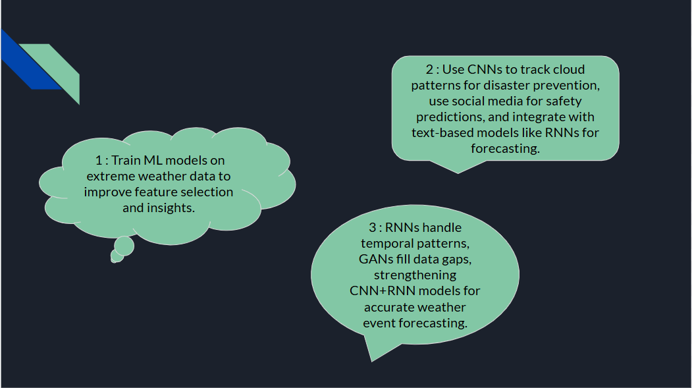
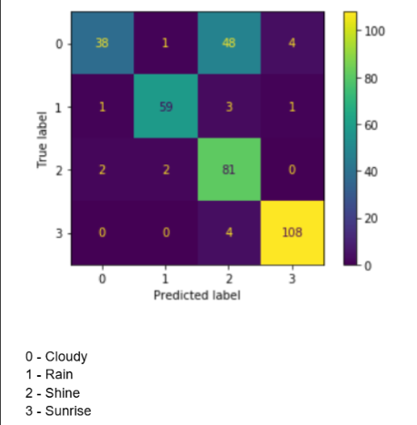

Machine Learning with Python: Weather Conditions and Climate Change with ClimateWins
Overview
Climate Wins, a fictional company, is interested in using machine learning to study the weather patterns in Europe. As a data analyst working for the company, my job is to study the data and come up with accurate predictions for the near future, in terms of the weather being pleasant or not, based on analyzing past weather data using state-of-the-art machine learning algorithms. The primary purpose of this project was to showcase my skills in adopting machine learning techniques to potentially solve a Climate Change situation. This project was done in association with CareerFoundry, as a requirement to finish its Machine Learning module.
Tools & Skills
This project was done entirely using Jupyter Notebooks using python libraries numpy, pandas, matplotlib (for data visualization) and other popular Deep Learning frameworks including but not limited to CNNs (Convoluted Neural Networks), GANs (Generative Adverserial Networks).
Data
This data set based on weather observations from 18 different weather stations across Europe, which contain data ranging from the late 1800s to 2022. Recordings exist for almost every day with values such as temperature, wind speed, snow, global radiation, and more. This data is collected by the European Climate Assessment & Data Set project.
Workflow
Thought Experiments
Here are some ideas we can consider in the future.
Thought Experiment 1 : Random Forest & Variable Importance
- Since we would most likely train on millions of observations when the models are scaled, it is crucial to keep the training costs low without compromising the efficiency of this operation.
- By training random forest models exclusively on data specific to extreme weather conditions, we would be able to narrow down the list of features to its most important ones, helping us get rid of redundant features and making training faster.
- This could also help human experts discover relationships between such features, if any.
- Ranking weather stations based on their importance to a Random Forest model!
- Metrics on temperature, radiation, sunshine and precipitation all rank high among the most important stations!
Thought Experiment 2 : CNNs & RNNs on how cloud patterns emerge over time
- Since CNNs excel at image data, they can be used to track cloud movements and identify emerging patterns, potentially saving lives from disastrous cyclones, tsunamis and similar events.
- Data can be collected from social media accounts (for instance, images on Instagram) along with their location, and make short-term predictions as to whether that place is safe for travel
- The idea mentioned above could be taken a step further by feeding the spatial features extracted by the CNN layers to a model more capable of studying patterns over time, like an RNN or a LSTM model (forecasting by hour, day, month, etc).
- On a trained CNN, the “pleasantness” of the weather was correctly classified for most stations, with an overall accuracy of 82.76%
- The set of optimized hyperparameters which brought the accuracy to its maximum value (among the subset of values considered)
Thought Experiment 3 : GAN and Radar Recognition
- With respect to the second thought experiment, RNNs can capture temporal patterns. But often, there could be gaps in the data. For instance, maybe an hour’s data might be missing in the training set.
- GANs could come in handy as the generator component could create synthetic images that resemble the missing weather condition.
- This would, in turn, make the training of the CNN+RNN models stronger and the final output would be more closer to the real world.
- Such situations could be diverse, ranging from the formation of cyclones to the intensity of forest fires.
Less likely to overfit as the validation accuracy is close to the training accuracy, generalizing well on unseen data!
| Metric | Value |
|---|---|
| Train Accuracy | 84.93% |
| Train Loss | 0.0585 |
| Validation Accuracy | 81.69% |
| Validation Loss | 0.0865 |
Generative Adversarial Networks (GAN) and synthetic image generation
Certain weather phenomena are so rare that there is insufficient image data to train the models well. To mimic and create images closer to reality for such cases, GAN models could come in handy as they are well known for generating synthetic images based on human input. The following are 3 examples of synthetic images generated by a trained GAN, indicating ‘cloudy’, ‘sunny’ & ‘cloudy’ climate respectively.
Recommendations
- In line with the objective of this project, which boils down to making accurate short-term predictions, models such as CNN + RNN that capture the temporal pattern (along with spatial features) come highly recommended.
- However, as discussed in the previous slide, there could be time gaps in training data and in order to fill those gaps in time, GANs might come in handy and could act as a supplement to the training stages of the above model.
Next Steps
- Gain accessibility to diverse data - apart from meteorological data, geographic data, satellite image data, real-time sensor data could all help widen the scope of this project and aid in improving accuracy.
- Explore GAN models further and see if we could incorporate audio data - for instance, whether we could predict the sound of thunder and rain and how that relates to the weather conditions